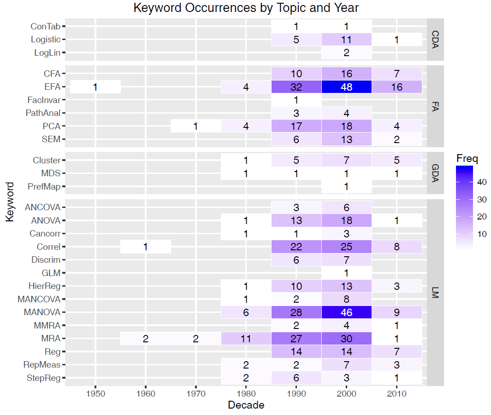
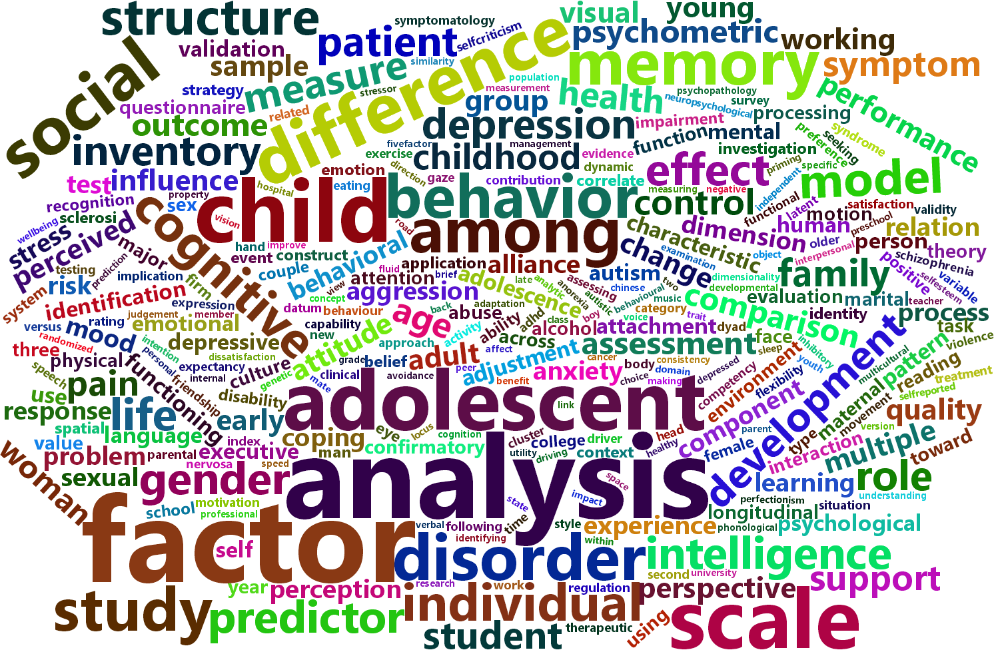

1 Introduction
1.1 Ubiquity of multivariate research designs
Multivariate response designs are increasingly common in applied behavioral and social science research, and are utilized to analyze a wide range of phenomena. For instance, as an introductory exercise, graduate students registered a multivariate data analysis course in the Psychology Department at York University between 1990 and 2015 were asked to scan one or more journals in their area and to find at least one paper that utilized some form of multivariate analysis.
With an average of 15–20 students per year and over approximately 20 years, this yielded a bibliographic database containing 405 exemplars (Friendly and 6140 Members 2012). These used a variety of multivariate and supplementary univariate methods, ranging from MANOVA to path analysis, from canonical correlation to multidimensional scaling, which were categorized by statistical method using keyword terms.
Overall, MANOVA, factor analysis, multiple regression, correlation, and principal components analysis were utilized the most frequently. See Figure fig-heatmap for a summary of these results, using a heatmap display of frequencies by time. An overall categorization pertaining to the type of multivariate model used (CDA = Categorical data analysis, FA = Factor analysis, GDA = Geometric data analysis, and LM = Linear models) is shown in the right margin. This is clearly not a representative sample of the literature, but it does illustrate an increase of articles deemed noteworthy over time.
Further, a content analysis of the article titles reveals the variation in topics discussed. For instance, Figure fig-wordcloud is a wordcloud showing the 50 most frequently-used words, with size proportional to occurrence. While a few of the terms are analytic (e.g., the most frequently used term is “analysis”, with 33 occurrences), others showcase the breadth of psychological research, as personality, factor, social, memory, children, cognitive, behavior, all appear in the top 15, with 14 or more appearances each.

1.2 Why use a multivariate design
A particular research outcome (e.g., depression, neuro-cognitive functioning, academic achievement, self-concept, attention deficit hyperactivity disorders) might take on a multivariate form if it has several observed measurement scales or related aspects by which it is quantified, or if there are multiple theoretically distinct outcomes that should be assessed in conjunction with each other (e.g., using depression, generalized anxiety, and stress inventories to model overall happiness). In this situation, the primary concern of the researcher is to ascertain the impact of potential predictors on two or more response variables simultaneously.
For example, if academic achievement is measured for adolescents by their reading, mathematics, science, and history scores, the following questions are of interest:
Do predictors such as parent encouragement, socioeconomic status and school environmental variables affect all of these outcomes?
Do they affect them in the same or different ways?
How many different aspects of academic achievement can be distinguished in the predictors? Equivalently, is academic achievement unidimensional or multidimensional in relation to the predictors?
Similarly, if psychiatric patients in various diagnostic categories are measured on a battery of tests related to social skills and cognitive functioning, we might want to know:
Which measures best discriminate among the diagnostic groups?
Which measures are most predictive of positive outcomes?
Further, how are the relationships between the outcomes affected by the predictors?
Such questions obviously concern more than just the separate univariate relations of each response to the predictors. Equally, or perhaps more importantly, are questions of how the response variables are predicted jointly.
Note
Structural equation modeling (SEM) offers another route to explore and analyze the relationships among multiple predictors and multiple responses. They have the advantage of being able to test potentially complex systems of linear equations in very flexible ways; however, these methods are often far removed from data analysis per se and except for path diagrams offer little in the way of visualization methods to aid in understanding and communicating the results. The graphical methods we describe here can also be useful in a SEM context.
1.3 Linear models: Univariate to multivariate
For classical linear models for ANOVA and regression, the step from a univariate model for a single response, \(y\), to a multivariate one for a collection of \(p\) responses, \(\mathbf{y}\) is conceptually very easy. That’s because the univariate model,
\[y_i = \beta_0 + \beta_1 x_1 + \beta_2 x_2 + \dots + \beta_q x_q + u_i , \]
or, in matrix terms,
\[\mathbf{y} = \mathbf{X} \; \mathbf{\beta} + \mathbf{u}, \quad\mbox{ with }\quad \mathbf{u} \sim \mathcal{N} (0, \sigma^2 \mathbf{I}) ,\]
generalizes directly to an analogous multivariate linear model (MLM),
\[\mathbf{Y} = [\mathbf{y_1}, \mathbf{y_2}, \dots, \mathbf{y_p}] = \mathbf{X} \; \mathbf{B} + \mathbf{U} \quad\mbox{ with }\quad \mathbf{U} \sim \mathcal{N} (\mathbf{0}, \mathbf{\Sigma})\]
for multiple responses (as will be discussed in detail). The design matrix, \(\mathbf{X}\) remains the same, and the vector \(\beta\) of coefficients becomes a matrix \(\mathbf{B}\), with one column for each of the \(p\) outcome variables.
Happily as well, hypothesis tests for the MLM are also straight-forward generalizations of the familiar \(F\) and \(t\)-tests for univariate response models. Moreover, there is a rich geometry underlying these generalizations which we can exploit for understanding and visualization.
1.4 Visualization is harder
However, with two or more response variables, visualizations for multivariate models are not as simple as they are for their univariate counterparts for understanding the effects of predictors, model parameters, or model diagnostics. Consequently, the results of such studies are often explored and discussed solely in terms of coefficients and significance, and visualizations of the relationships are only provided for one response variable at a time, if at all. This tradition can mask important nuances, and lead researchers to draw erroneous conclusions.
The aim of this book is to describe and illustrate some central methods that we have developed over the last ten years that aid in the understanding and communication of the results of multivariate linear models (Friendly 2007; Friendly and Meyer 2016). These methods rely on data ellipsoids as simple, minimally sufficient visualizations of variance that can be shown in 2D and 3D plots. As will be demonstrated, the Hypothesis-Error (HE) plot framework applies this idea to the results of multivariate tests of linear hypotheses.
Further, in the case where there are more than just a few outcome variables, the important nectar of their relationships to predictors can often be distilled in a multivariate juicer— a projection of the multivariate relationships to the predictors in the low-D space that captures most of the flavor. This idea can be applied using canonical correlation plots and with canonical discriminant HE plots.

1.5 Problems in understanding and communicating MLM results
In my consulting practice within the Statistical Consulting Service at York University, I see hundreds of clients each year ranging from advanced undergraduate thesis students, to graduate students and faculty from a variety of fields. Over the last two decades, and across each of these groups, I have noticed an increasing desire to utilize multivariate methods. As researchers are exposed to the utility and power of multivariate tests, they see them as an appealing alternative to running many univariate ANOVAs or multiple regressions for each response variable separately.
However, multivariate analyses are more complicated than such approaches, especially when it comes to understanding and communicating results. Output is typically voluminous, and researchers will often get lost in the numbers. While software (SPSS, SAS and R) make tabular summary displays easy, these often obscure the findings that researchers are most interested in. The most common analytic oversights that we have observed are:
Atomistic data screening: Researchers have mostly learned the assumptions (the Holy Trinity of normality, constant variance and independence) of univariate linear models, but then apply univariate tests (e.g., Shapiro-Wilk) and diagnostic plots (normal QQ plots) to every predictor and every response.
Bonferroni everywhere: Faced with the task of reporting the results for multiple response measures and a collection of predictors for each, a common tendency is to run (and sometimes report) each of the separate univariate response models and then apply a correction for multiple testing. Not only is this confusing and awkward to report, but it is largely unnecessary because the multivariate tests provide protection for multiple testing.
Reverting to univariate visualizations: To display results, SPSS and SAS make some visualization methods available through menu choices or syntax, but usually these are the wrong (or at least unhelpful) choices, in that they generate separate univariate graphs for the individual responses.
This book to discusses a few essential procedures for multivariate linear models, how their interpretation can be aided through the use of well-crafted (though novel) visualizations, and provides replicable sample code in R to showcase their use in applied behaviorial research. A later section [ref?] provides some practical guidelines for analyzing, visualizing and reporting such models to help avoid these and other problems.
Friendly, Michael. 2007. “HE Plots for Multivariate General Linear Models.” Journal of Computational and Graphical Statistics 16 (2): 421–44. https://doi.org/10.1198/106186007X208407.
Friendly, Michael, and 6140 Members. 2012. “Psychology 6140 Research Applications Papers.” online document. http://www.psych.yorku.ca/lab/psy6140/py614bib.pdf.
Friendly, Michael, and David Meyer. 2016. Discrete Data Analysis with R: Visualization and Modeling Techniques for Categorical and Count Data. Boca Raton, FL: Chapman & Hall/CRC.